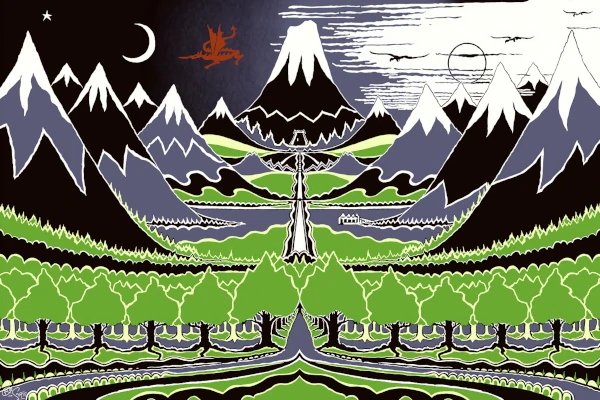

Click on the play button (Don't forget to increase the volume!)
The Hobbit by J.R.R.Tolkine
- Chapter 1
- Chapter 2
00:00
00:00
Volume:
Click on the play button (Don't forget to increase the volume!)